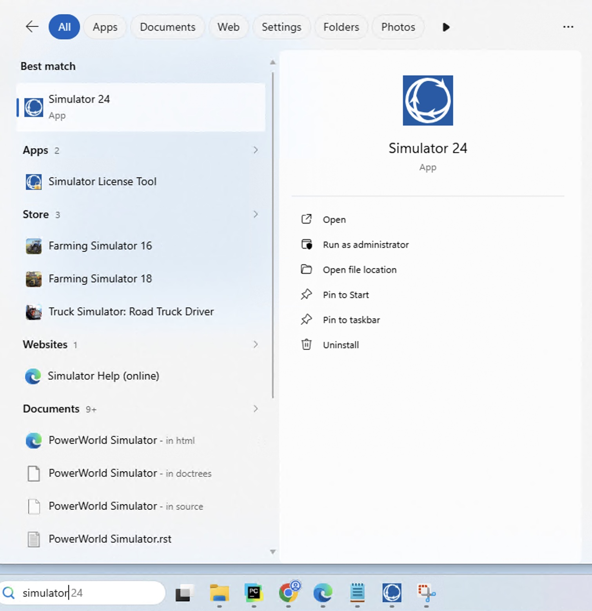

PowerWorld Simulator
Most of the Birchfield research group’s work involves PowerWorld Simulator, a software used to simulate power systems. Instead of using the PowerWorld GUI directly, we typically use Easy Sim Auto (ESA) , or Professor Birchfield’s GridWorkbench python packages to interact with PowerWorld through Python. At the time this guide was written, PowerWorld does NOT run on mac OS: you will need a windows machine. 😢
Installing and Unlocking PowerWorld
First, install PowerWorld by going to the PowerWorld Download Page.
Then, go to the PowerWorld Credentials File and open “Notes.txt”, which should be stored in the group’s shared Google Drive. Enter the user name and password from this file on the PowerWorld download page, and your first and last name and email. Click submit when you’ve entered all requested fields.
The webpage should look like the following

Scroll down to the part of the page where there are hyperlinks in the form of Version XX Installation/Patch MSI, and Version XX Hardware Key Drivers. Click on the latest (highest number) hyperlink that ends with Installation/Patch MSI, and wait for the installer to download. Once the installer has downloaded, go to your downloads folder and double click on the file called “pw24FullSimulatorSetup” to start installation. Accept the license agreement, and then click install. Once installation is done, click finish.
Note
Even though you have installed PowerWorld, you most likely still cannnot use it at this point because the license is locked!
To unlock the license, go to the windows search bar, type in “Simulator”, and click on the software that looks like the following:
{kind=link}

Once you open PowerWorld, you should get a notifcation telling you that PowerWorld is locked. Go to Software Keys page to get the key to unlock the license. Enter the same username and password to download PowerWorld, and for the Machine/Lock code, go to the window that looks like the following

and click “Copy to Clipboard” to copy the machine ID. Fill out the rest of the requested information, and do not click “Postpone Upgrade.” Click submit, and then download the software key. Go back to the window where you copied the machine ID, click “Browse”, and select the software key you just downloaded. Then, click “Unlock All Users” if you are able to, and then PowerWorld should be unlocked!
Easy Sim Auto (ESA)
Once PowerWorld is unlocked, let’s learn how to use ESA. ESA is a Python package that is easier to use than PowerWorld’s regular SimAuto Python interface package, and is utilized to automate grid simulations.
Downloading a Case
Before using ESA, we must first download a case. In this guide, we download the Hawaii Synthetic Case from the Texas A&M Electric Grid Dataste repository. Many of the studies you conduct will use the synthetic cases from this repository. After downloading the zip file, and opening it, you will see many files, but the only one we use has the “PowerWorld Binary”, or “.PWB/.pwb” type. An example of the Hawaii case is shown below, with a red box around it. Models of electric grids in PowerWorld are PWB type, and we will ignore the rest of the files in the downloaded folder, for now: they are not PowerWorld files, and not compatible with it.

I would suggest moving/copying this case in a folder designated for PowerWorld cases.
Comprehensive ESA Quickstart Guide
ESA includes its own tutorial, which provides a good overview of the software. However, it can be difficult for new students to follow because some details are left unexplained. This guide assumes no prior experience with PowerWorld and is intended to bridge the gaps in the ESA Quick Start Guide, which we still recommend you read.
First, open a Python IDE (Integrated Development Environment) such as PyCharm or VSCode. Then, pip install ESA through the terminal:
python -m pip install ESA
and also pip install numba (not to be confused with numpy)
python -m pip install numba
Next, create a new Python script, and import the SimAuto Wrapper (SAW) class:
from esa import SAW
and define a variable to store the file path to the case you stored, like this:
case_path = r"C:\Users\joshua_x\Documents\Research\Cases\Hawaii40_20231026.pwb"
Then, we initialize a SAW instance, and “open the case”:
saw = SAW(case_path)
Next, we show how to read in some case data. We start with an example to read bus data. We will demonstrate how to retreive per-unit bus voltage and bus voltage angles.
First, we must determine what the name of a grid component (bus, transmission line, etc are referred to as grid components) is in PowerWorld, which is needed later on. For most scenarios, the table below should suffice:
Grid Component |
PowerWorld Name |
|---|---|
Bus |
Bus |
Generator |
Gen |
Branch (transmission line/transformer) |
Branch |
Load |
Load |
Substation |
Substation |
To get the full list of PowerWorld names of object types/grid components, we need to get the Excel sheet for PowerWorld object fields. First, we open up PowerWorld. Then, we go to the “Window” tab, as highlighted in green in the image below:

Then, under “Export Case Object Fields” highlighted in red, select “Send to Excel”, and the Excel sheet should open. The PowerWorld names of objects are given in the column called “Object Type”, as seen below. This example shows the PowerWorld bus name for buses, which is “Bus.”

Once we determine a grid component’s PowerWorld object name, we retrieve what are called PowerWorld “key fields”, which are fields that are required to identify a grid component as seen below. For buses, the only key field is the bus number. This Excel sheet is super important, so make to save it!
bus_key_fields = saw.get_key_field_list("Bus")
Note
The case (upper or lower) doesn’t mattter for PowerWorld object names in the get_key_field_list function.
We also want to get the bus voltages and angles, so we must specify those fields, too. These fields have their own names in PowerWorld, too. In the PowerWorld objects Excel sheet, (same one used to determine grid component names) the PowerWorld field names are given in the “Variable Name” column highlighted in blue, and the variable’s description is found in the “Description” columnm highlighted in purple, as seen below:

For our scenario, the bus per-unit voltage PowerWorld name is “BusPUVolt”, which is highlighted in red in the image above. We look in the Description column to find the row for voltage angle in radians, look in the Variable Name column, and find that its PowerWorld name is “BusRad”. A similar principle can be applied to any field we want to determine the PowerWorld name for.
We retrieve these values using the lines of code below:
additional_bus_fields = ["BusPUVolt", "BusRad"]
bus_fields = bus_key_fields + additional_bus_fields
df_bus = saw.GetParametersMultipleElement("Bus", bus_fields)
bus_nums = df_bus["BusNum"].tolist()
bus_vpus = df_bus["BusPUVolt"].tolist()
bus_angle_rads = df_bus["BusRad"].tolist()
We print some of these values out
bus number = 1, per-unit voltage = 0.9935, voltage angle degrees = -1.12
bus number = 2, per-unit voltage = 0.9912, voltage angle degrees = -3.93
bus number = 3, per-unit voltage = 0.9845, voltage angle degrees = -4.73
bus number = 4, per-unit voltage = 0.9788, voltage angle degrees = -5.75
bus number = 5, per-unit voltage = 0.9890, voltage angle degrees = -2.07
bus number = 6, per-unit voltage = 0.9812, voltage angle degrees = -5.53
bus number = 7, per-unit voltage = 0.9806, voltage angle degrees = -5.67
bus number = 8, per-unit voltage = 0.9786, voltage angle degrees = -5.70
bus number = 9, per-unit voltage = 0.9868, voltage angle degrees = -2.55
bus number = 10, per-unit voltage = 0.9809, voltage angle degrees = -5.65
and confirm that they are, in fact, the same as those from the PowerWorld GUI: